Exploring Virtual Machine Live Migration: Performance Analysis and Optimization
Live Migration
Live Migration is a crucial feature in virtualization technology that allows the transfer of a running virtual machine (VM) from one physical host to another without interrupting the VM's operation or services. 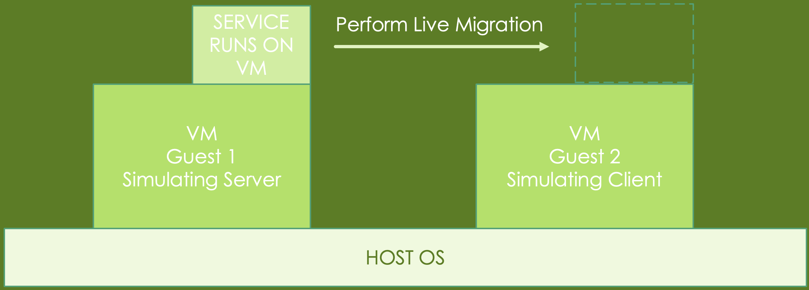
The architecture we want to simulate:
Our Homework Architecture:
Since not everyone will have 2 PCs available to run QEMU on them, we provided an alternative option:
- Note: VirtualBox now has native Apple Silicon support on Apple hardware with M-Series chips, but we haven't yet tested the nested virtualization feature, so this homework may not work out on your hardware by default.
- If you still want to test that out, feel free to ask us through the discussion/email on eeclass.
- Or you can use the PC room in C.L.Liu(EECS) 3F, we already have VirtualBox installed in there.
Setup Environment
Prerequisites
- We strongly suggests that your computer have at least 8GB of RAM and 30GB+ of storage space.
- First, use a hypervisor software to create two virtual machines on your computer.
- If you’re using Linux : QEMU is recommended.
- If you’re using Windows or MacOS : VMWare Workstation or VMWare Fusion are recommended.
The download link for VMware's software can be elusive, so you might need to put in some effort to locate it.
-
Next, go to download Ubuntu-24.04 desktop version as your Guest OS. It’s about 5.9G. You can grab it from here: download link
-
Search for detailed installation guide if you don't know how to install Ubuntu yet.
VMWare Workstation
1. Assuming you've downloaded the VMWare Workstation installer and Ubuntu image file.
2. Install the VMWare Workstation.
3. Click "Create a New Virtual Machine" and proceed with the creation process.
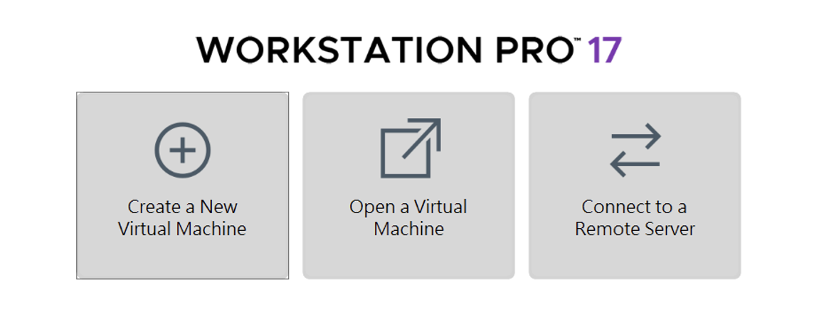
4. Use the Ubuntu image you've already downloaded. (Use the version you downloaded, not 20.04 in the image)
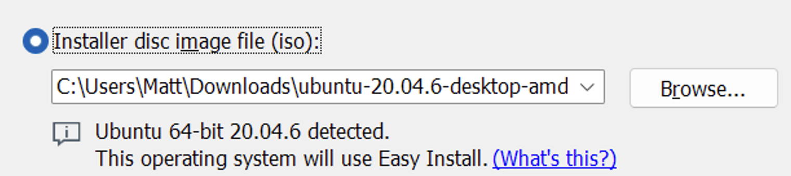
5. Click "Customize Hardware..."
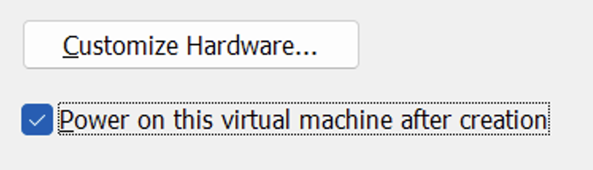
6. Go to "Processors" tab and enable "Virtualize Intel VT-x/EPT or AMD-V/RVI".
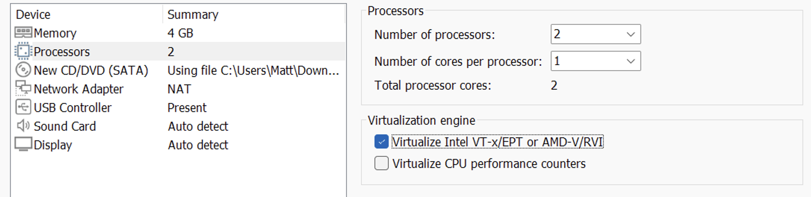
7. Repeat the above steps to create a second virtual machine.
8. Boot each virtual machine and complete the Ubuntu installation process.
9. After completing the installation process, open the terminal from your Applications menu.
VirtualBox
Using VirtualBox is similar to using VMWare Workstation, but you need to enable nested virtualization.
Use GUI to enable Nested Virtualization
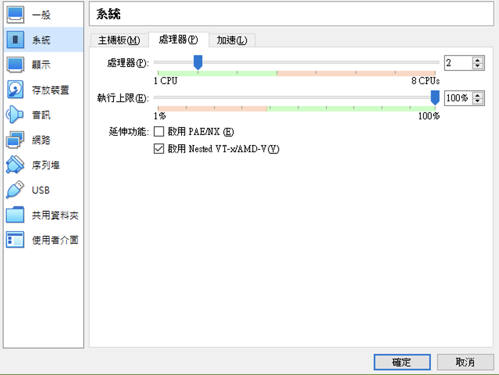
Use Command Line to Enable Nested Virtualization
- Go to the directory of the VirtualBox you installed.
- Open Command Prompt right in the place.
- Enter the command below to enable nested virtualization:
Replace.\VBoxManage.exe modifyvm "VM Name" --nested-hw-virt on"VM Name"with the name of your virtual machine.
QEMU
0. Before starting, setup a bridge br0 for QEMU to bind to: (will be cleaned up naturally after a reboot)
- Choose a subnet/IP that does not conflict with your usecase. For CIDR notation, see here.
sudo ip link add br0 type bridge
sudo ip addr add 192.168.50.1/24 dev br0
sudo ip link set br0 up
- After running the command above, you can inspect your current network settings:
ip a
- Add a configuration file to enable qemu to automatically pick up your bridge configured above:
sudo su
mkdir -p /etc/qemu
echo "allow br0" >> /etc/qemu/bridge.conf
- For host to provide internet access to all instances attached to this bridge, issue the following command:
sudo sysctl -w net.ipv4.ip_forward=1
sudo iptables -A FORWARD -i br0 -o eth0 -j ACCEPT
sudo iptables -A FORWARD -i eth0 -o br0 -m conntrack --ctstate ESTABLISHED,RELATED -j ACCEPT
sudo iptables -t nat -A POSTROUTING -o eth0 -s 192.168.50.0/24 -j MASQUERADE
- Note: swap out
eth0for your network interface that provides internet access, you can check it by issuing the following command:
ip address
1. First, create the disk image for guest1.
qemu-img create -f qcow2 guest1.qcow2 20G
2. Run guest1 and complete the Ubuntu installation process.
sudo qemu-system-x86_64 -cpu host -enable-kvm -m 4G -smp 1 \
-drive if=virtio,format=qcow2,file=guest1.qcow2 \
-nic bridge,br=br0,model=virtio-net-pci,mac=52:54:00:40:C9:01 \
-boot d -cdrom <your_ubuntu_img_file_path>.iso \
-vnc :1,password=on -monitor stdio
- In qemu console, type the following command to change the vnc password to the one you know:
(qemu) change vnc password
- After changing the password to the one you know, use any VNC viewer (e.g. : RealVNC, vncviewer) connect to (Your host IP):5901 (e.g. : 192.168.7.102:5901 or 127.0.0.1:5901), and complete the installation process.
- After Ubuntu installation is complete, remove the
-boot d -cdrom <your_img_file_path>.isopart from the above command and runguest1again. - If you want to reach internet or other device on this guest instance, you may want to manually configure your IP under the same subnet. (e.g.
192.168.50.2, subnet mask:255.255.255.0, gateway:192.168.50.1)
3. Repeat the same steps for guest2
qemu-img create -f qcow2 guest2.qcow2 20G
sudo qemu-system-x86_64 -cpu host -enable-kvm -m 4G -smp 1 \
-drive if=virtio,format=qcow2,file=guest2.qcow2 \
-nic bridge,br=br0,model=virtio-net-pci,mac=52:54:00:40:C9:02 \
-boot d -cdrom <your_ubuntu_img_file_path>.iso \
-vnc :1,password=on -monitor stdio
- In qemu console, type the following command to change the vnc password to the one you know:
(qemu) change vnc password
-
Using any VNC viewer (e.g. : RealVNC, vncviewer) connect to (Your host IP):5902 (e.g. : 192.168.7.102:5902 or 127.0.0.1:5902), and complete the installation process.
-
After Ubuntu installation is complete, remove the
-boot d -cdrom <your_img_file_path>.isopart from the above command and runguest2again. -
If you want to reach internet or other device on this guest instance, you may want to manually configure your IP under the same subnet. (e.g.
192.168.50.3, subnet mask:255.255.255.0, gateway:192.168.50.1)
Live Migration
- For more information, refer to the Assignment section.
Task 1: Setting up guest1
1. Enter the following command into the terminal:
sudo apt update -y
sudo apt install -y vim qemu-kvm nfs-kernel-server net-tools
2. Before launching QEMU on the first guest VM, obtain the IP address of this VM.
ip a
For example: 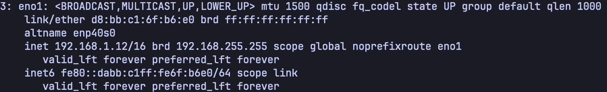
3. Create a QEMU image file:
qemu-img create -f qcow2 ubuntu.qcow2 10G
4. Create a new directory in /mnt and modify its ownership and permissions:
sudo mkdir -p /mnt/nfs
sudo chown nobody:nogroup /mnt/nfs
sudo chmod 777 /mnt/nfs
5. Move the QEMU image file you just created into the new directory:
mv ubuntu.qcow2 /mnt/nfs
6. Edit the file at /etc/exports with superuser privileges:
sudo vim /etc/exports
7. Add the following line to the end of the exports file and save it:
/mnt/nfs *(rw,sync,no_subtree_check,no_root_squash)
8. Return to the terminal and enter this command to update the exports file:
sudo exportfs -arv
9. Launch QEMU to simulate a running process on the virtual machine:
sudo qemu-system-x86_64 \
-cpu host -enable-kvm -m 2G -smp 1 \
-drive if=virtio,format=qcow2,file=/mnt/nfs/ubuntu.qcow2 \
-monitor telnet:127.0.0.1:5500,server,nowait
A window similar to this will then appear: 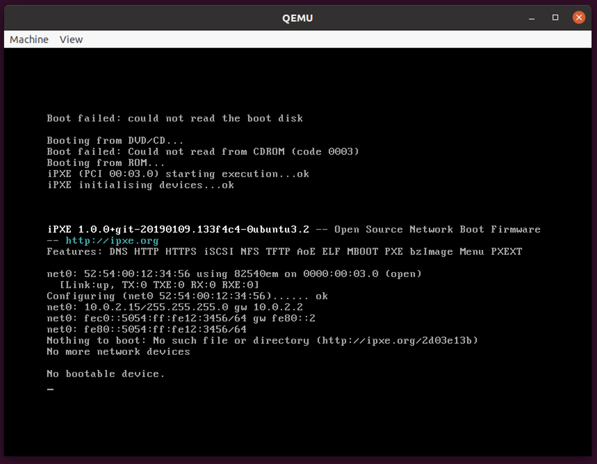
Task 2: Setting up guest2
1. Enter the following commands into the terminal:
sudo apt update -y
sudo apt install -y qemu-kvm net-tools nfs-common
2. Before launching QEMU on the second guest VM, obtain the IP address of this VM.
ip a
3. Enter the following commands into the terminal to mount NFS service:
sudo mkdir -p /mnt/nfs
sudo mount -t nfs <replace_with_guest1_ip>:/mnt/nfs /mnt/nfs
4. Luanch QEMU on the second VM to prepare for the incoming live virtual machine migration:
sudo qemu-system-x86_64 \
-cpu host -enable-kvm -m 2G -smp 1 \
-drive if=virtio,format=qcow2,file=/mnt/nfs/ubuntu.qcow2 \
-incoming tcp:0:4400
A window similar to this will then appear: 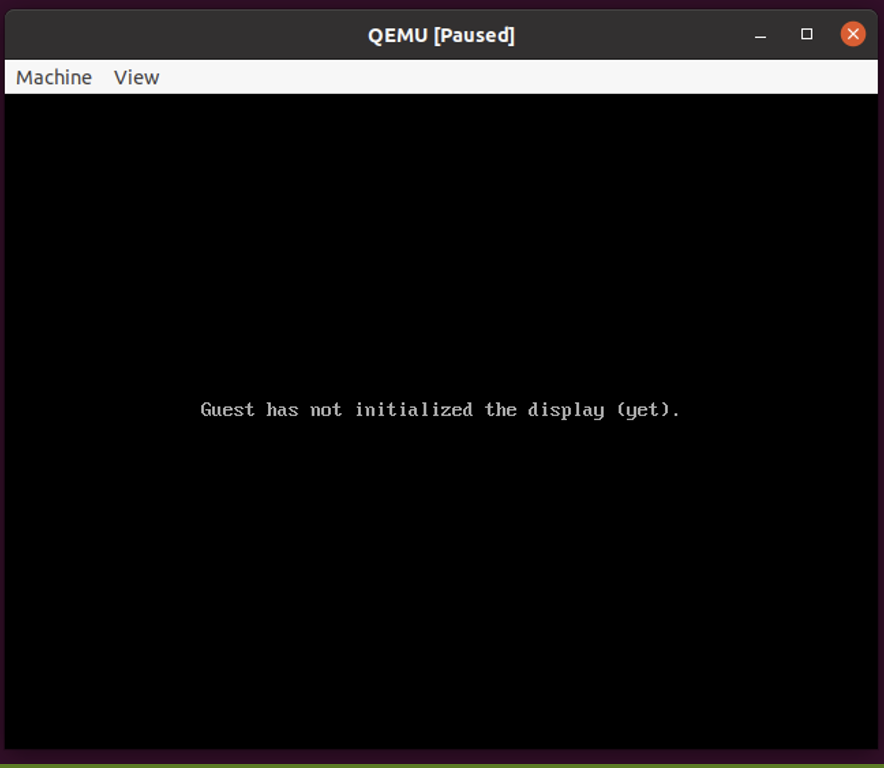
Task 3: Migrate from guest1 to guest2
1. Return the first guest VM, open a new terminal tab, and enter the following command:
telnet 127.0.0.1 5500
2. Upon the new command prompt, issue the following command to initiate the live migration process:
migrate -d tcp:<replace_with_guest2_ip>:4400
3. Show the migration info:
info migrate
4. The screen of the QEMU window on guest2 should now appear as follows:
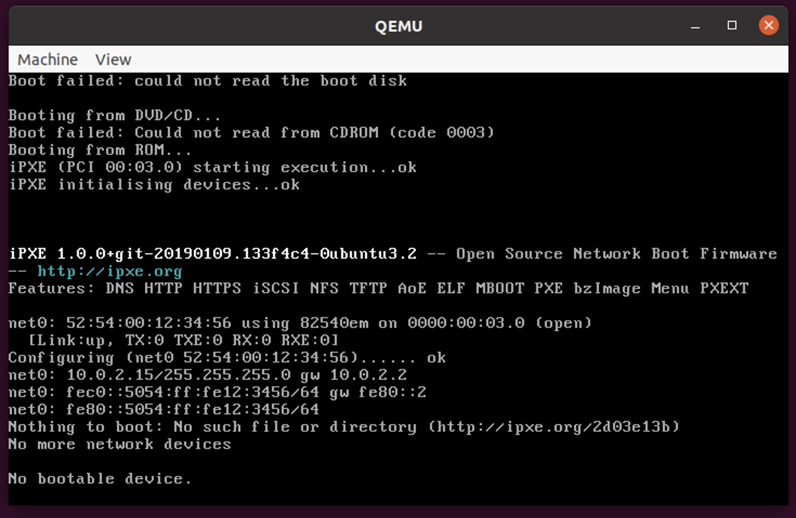
This indicates that you've successfully completed the live migration of the virtual machine.
Assignment
Requirements
1. Demo (40 points)
- You need to demonstrate the above steps of the presentation through a screen recording, showing how you perform live migration on VMs using the framework we provided.
- (only the live migration part is required, including the process of setting up 2 guests, but not the installation process)
- Naming the record video file as
HW1_<your_student_id>.xxx, e.g.HW1_113062566.movorHW1_113062566.mp4. - The length of this video should not exceed 30 minutes.
- Upload the video to a cloud storage service and provide a link with viewing permission.
- This can be done using YouTube, Google Drive, Dropbox, or any other similar service.
- Example:
2. Report (60 points)
- You have to make a report of pdf format named
HW1_<your_student_id>.pdf, e.g.HW1_113062566.pdf. - The report should include the following items:
- A. Provide a detailed explanation of each instruction, including the purpose of individual arguments within the commands. (5 points)
- B. Show the performance testing results by
perfwith and without-enable-kvmon VM; furthermore compare among them and simply explain the results (10 points) - C. Show the performance testing results by
iperfwith and withoutvirtioon VM; furthermore compare among them and explain the results (10 points) - D. Show the performance measurements by
perfandiperfduring the live migration is progressing; furthermore, simply describe your observations. (10 points) - E. What is "live migration" and why we need it. (10 points)
- F. QEMU has a "fault tolerance" feature called COLO. We don’t ask you to utilize this feature in this assignment, but some questions you may answer :
- What is fault-tolerance in virtualization technology and why we require it? (7.5 points)
- What are the relationships between live migration and fault-tolerance? (7.5 points)
Submission
Submit both the demo video link and the report to eeclass.
Deadline
The deadline is set for October 26, 2025 23:59. Late submission is not allowed.
If you have any question, feel free to asking through eeclass or email.
Containerized Socket Communication: Using Docker and Kubernetes
This assignment has two phases:
- The first phase requires you to explore how to use Docker.
- The second phase is to create services using Kubernetes. Each phase has several tasks.

Setup Environment
Prequisite
We have provided the required files for this assignment. Please download them from here.
The required files are as follows (included within the downloaded hw2.zip):
docker
|-- server
| |-- Dockerfile
| |-- socket_server
| |-- socket_server_arm
|
|-- client
|-- Dockerfile
|-- socket_client.c
k8s
|-- deployment.yaml
|-- service.yaml
In addition, you must install the following programs on your computer:
- Docker: A tool that is used to automate the deployment of applications.
- Minikube: Local Kubernetes, focusing on making it easy to learn for Kubernetes.
- Kubectl: Command line tool for communicating with a control plane.
There are different installation processes dependending on your operating system. You must have root permissions in your system.
Docker
In this task, you are required to create two Docker containers. One container runs the server, and the other container runs the client, allowing the client to communicate with the server and transmit messages.
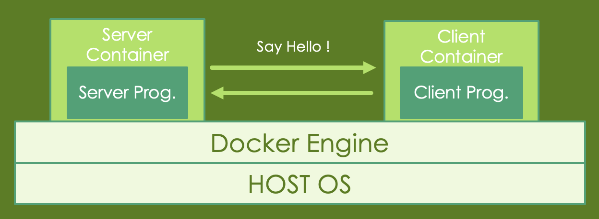
Once you have installed Docker and downloaded the required files, you can proceed with the following steps.
Note: In this section, you are required to take screenshots of the command output to include in your report when you see something like this:
Task 1: Building the images
1. Enter the client folder, open and modify the PLEASE ASSIGN section and append your student ID in socket_client.c as shown in the following image:
2. Build the image with the Dockerfile
- If you're on arm64 architecture (e.g., Apple M1/M2), you'll have to modify the Dockerfile to use
socket_server_arminstead.
cd path/to/server
docker build -t server-<your_student_id>
cd path/to/client
docker build -t client-<your_student_id>
You can use the following command to check images you've built:
docker images
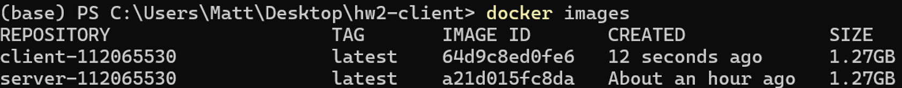
3. Launch the server container first, and then launch the client container:
docker run -it --rm --network host \
--name server \
server-<your_student_id>
docker run -it --rm --network host \
--name client \
client-<your_student_id>
The command docker run will create the container instance with the image and execute the container.
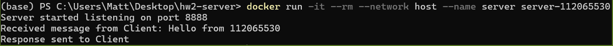 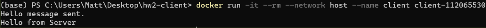
Task 2: Creating bridge
In this task, you are required to create a bridge to connect two container. (not related to Task 1)
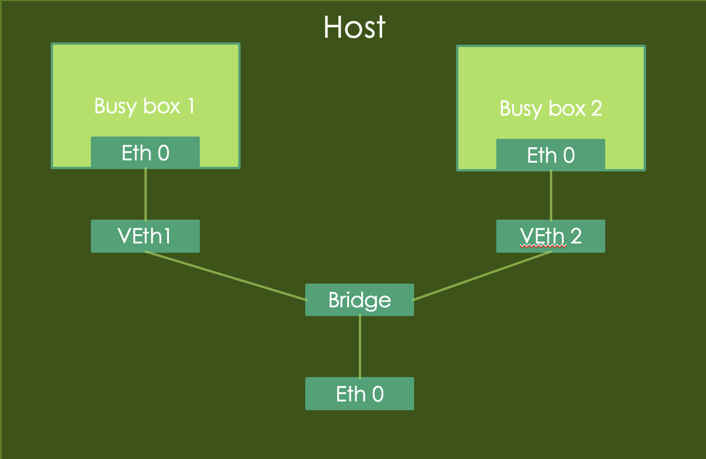
1. Create 2 containers using the following commands:
docker container run -d --rm --name box1 busybox /bin/sh -c "while true; do sleep 3600; done"
docker container run -d --rm --name box2 busybox /bin/sh -c "while true; do sleep 3600; done"
2. Create a network bridge:
docker network create box-bridge
3. Connecting two running containers to the network bridge:
docker network connect box-bridge box1
docker network connect box-bridge box2
4. You can use the following command to list docker networks:
docker network ls
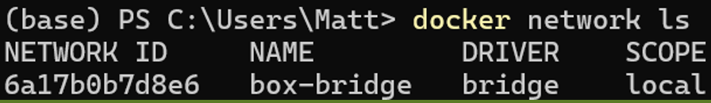
5. You can inspect more about the details of the box-bridge network:
docker network inspect box-bridge
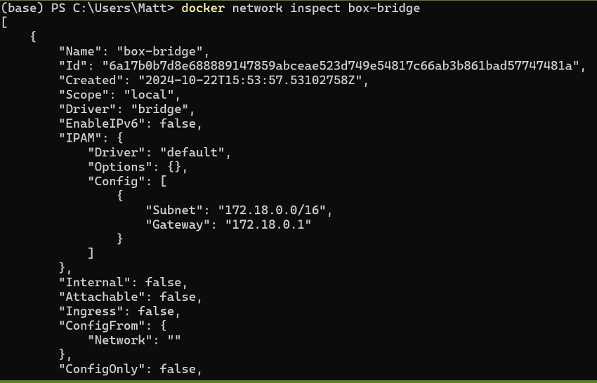
6. Log into box1 and try to ping box2:
docker exec -it box1 sh
ping box2
Task 3: Creating volume
1. You need to use docker volume create to create a volume and share the volume between two containers.
2. You need to use bind mounts to share a directory between two containers.
- Briefly describe how you did it, and use screenshots to assist your explanation. (10 points)
- What's the difference between these two steps? (5 points)
3. Answer the following questions: (20 points)
- Please explain the difference between Docker Container and Virtual Machine. *(10 points)
- Docker is more unsafe than virtual machine, please explain why and what's causing this issue. (10 points)
Kubernetes
Description
In this task, you're required to create services using Kubernetes. We will use the image files from the previous phase to build our services and use the client container to communicate with the services.
You need to figure out the following concept in the process:
- The relation between
Deployment,Replica SetandPod. - How pod management works in Kubernetes.
- How to expose an application with the
Service. - The difference between
ClusterIP,NodePort, andLoadBalancer.
Once you have:
- installed Docker
- installed Minikube
- installed Kubectl（Check the version to verify if it's installed)
- and downloaded the required files
you can proceed with the following steps.
Task 1: Launching K8s and deploy our containers
Launch your Kubernetes cluster
1. Start the Kubernetes cluster
minikube start
2. Get the instructions to point your docker client to point to the minikube docker daemon
minikube docker-env
3. Check the status of your minikube deployment
minikube status
Deploy the containers into the cluster
1. Enter the k8s folder, modify the files as required and input the following command:
kubectl apply -f deployment.yaml
kubectl apply -f service.yaml
2. Check the status of your deployment
kubectl get pods
kubectl get deployment
kubectl get services
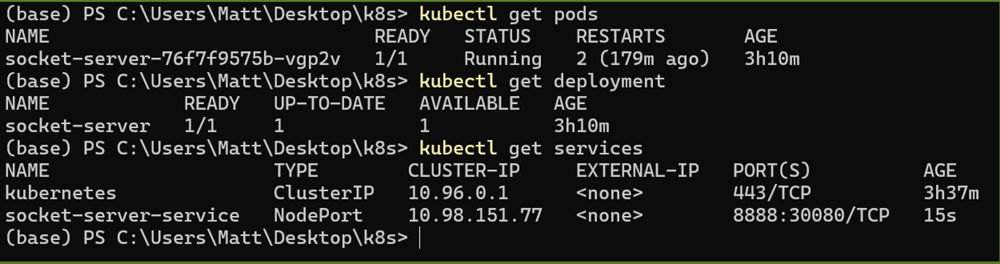
3. Answer the following questions and include the answers in your report:
- What is Kubernetes? Why do we need it? (5 points)
- Please explain the concepts of
Deployment,ServiceandPod. (5 points) - Why k8s use pod to manipulate the application instead of the container. (5 points)
- What is
Replica Setin Kubernetes? (5 points) - Why can the client successfully communicate through port 30080 when the server is listening on port 8888? (10 points)
(Optional) Check if your container is running correctly on the minikube
1. Get the ip address of the minikube:
minikube ip
2. Enter the client folder, open and modify the PLEASE ASSIGN section in socket_client.c. (Replace with your actual student ID):
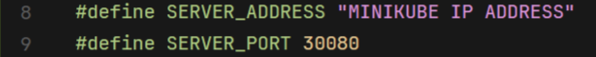 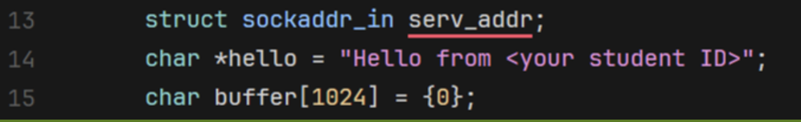
3. Build and run the client container.
Tear down the deployed services and minikube cluster after you finished testing:
kubectl delete -f service.yaml
kubectl delete -f deployment.yaml
minikube stop
Helper: Using K8sGPT to help debugging your issue
0. Prerequisite
- You need to have a google account that have access to Google AI Studio.
- You can use your local or other model provider as backend, but we'll use the free
gemini-2.5-flashAPI from Google AI Studio as an example here. - If you care about privacy when running K8sGPT on your PC, you may want to check this out.
1. Install K8sGPT
- Follow the official instructions here.
- Or download the binaries directly from the latest release.
2. Generate API Key from Google AI Studio
a. Go to Google AI Studio and sign in with your Google account.
b. Click on "Get API Key" button on the bottom left corner.
c. Create API Key
d. Copy the generated API key and save it somewhere safe.
3. Setup K8sGPT to use Gemini API as backend
- Replace
YOUR_API_KEYwith the API key you generated in step 2.
k8sgpt auth add --backend google --model gemini-2.5-flash --password "YOUR_API_KEY"
4. Ask K8sGPT to analyze your cluster and try to explain the issue:
k8sgpt analyze --explain --backend google
- Result:
➜ k8s git:(main) ✗ k8sgpt analyze --explain --backend google
W1012 01:04:58.380993 3501705 warnings.go:70] v1 Endpoints is deprecated in v1.33+; use discovery.k8s.io/v1 EndpointSlice
100% |████████████████████████████████████████████████████████████████████████████████████| (13/13, 8 it/min)
AI Provider: google
0: Deployment default/socket-server()
- Error: Deployment default/socket-server has 1 replicas in spec but 2 replicas in status because status field is not updated yet after scaling and 0 replicas are available with status running
Error: Deployment spec (1) and status (2) mismatch, likely due to a delayed status update after scaling. No pods are currently running.
Solution: 1. Wait a moment; it often self-corrects. 2. If persistent, check `kubectl get pods -l app=socket-server` for pod status. 3. If pods are stuck, `kubectl describe pod <pod-name>` for events/errors.
1: ConfigMap default/kube-root-ca.crt()
- Error: ConfigMap kube-root-ca.crt is not used by any pods in the namespace
Error: ConfigMap 'kube-root-ca.crt' exists but no pods in this namespace are configured to use it. It's currently unused.
Solution: 1. If required, modify pod spec to mount it. 2. If not, delete it: `kubectl delete cm kube-root-ca.crt`.
2: ConfigMap kube-node-lease/kube-root-ca.crt()
- Error: ConfigMap kube-root-ca.crt is not used by any pods in the namespace
Error: ConfigMap 'kube-root-ca.crt' exists but no pods in this namespace are configured to use it. It's currently unused.
Solution: 1. If required, modify pod spec to mount it. 2. If not, delete it: `kubectl delete cm kube-root-ca.crt`.
3: ConfigMap kube-public/cluster-info()
- Error: ConfigMap cluster-info is not used by any pods in the namespace
Error: ConfigMap 'cluster-info' exists but no pods are currently configured to use it in the namespace.
Solution: 1. Verify if 'cluster-info' is still required. 2. If not, delete it: `kubectl delete configmap cluster-info`.
4: ConfigMap kube-public/kube-root-ca.crt()
- Error: ConfigMap kube-root-ca.crt is not used by any pods in the namespace
Error: ConfigMap 'kube-root-ca.crt' exists but no pods in this namespace are configured to use it. It's currently unused.
Solution: 1. If required, modify pod spec to mount it. 2. If not, delete it: `kubectl delete cm kube-root-ca.crt`.
5: ConfigMap kube-system/extension-apiserver-authentication()
- Error: ConfigMap extension-apiserver-authentication is not used by any pods in the namespace
Error: ConfigMap 'extension-apiserver-authentication' exists but no pods in the namespace are configured to use it.
Solution: 1. Confirm if this ConfigMap is truly needed. 2. If not, delete it: `kubectl delete cm extension-apiserver-authentication`.
6: ConfigMap kube-system/kube-apiserver-legacy-service-account-token-tracking()
- Error: ConfigMap kube-apiserver-legacy-service-account-token-tracking is not used by any pods in the namespace
Error: ConfigMap `kube-apiserver-legacy-service-account-token-tracking` exists but no pods use it. It's likely obsolete or misconfigured.
Solution:
1. Verify if ConfigMap is needed.
2. If not, delete it: `kubectl delete cm kube-apiserver-legacy-service-account-token-tracking -n <ns>`.
3. If needed, check pod specs.
7: ConfigMap kube-system/kube-root-ca.crt()
- Error: ConfigMap kube-root-ca.crt is not used by any pods in the namespace
Error: ConfigMap 'kube-root-ca.crt' exists but no pods in this namespace are configured to use it. It's currently unused.
Solution: 1. If required, modify pod spec to mount it. 2. If not, delete it: `kubectl delete cm kube-root-ca.crt`.
8: ConfigMap kube-system/kubeadm-config()
- Error: ConfigMap kubeadm-config is not used by any pods in the namespace
Error: The `kubeadm-config` ConfigMap exists but no pods are currently using it.
Solution: 1. Verify if it's still needed. 2. If not, delete it: `kubectl delete cm kubeadm-config -n kube-system`.
9: ConfigMap kube-system/kubelet-config()
- Error: ConfigMap kubelet-config is not used by any pods in the namespace
Error: The ConfigMap named 'kubelet-config' exists in the namespace but no running pods are currently configured to mount or reference it, making it an unused resource.
Solution: 1. Verify if 'kubelet-config' is still required. 2. If not, delete it: `kubectl delete cm kubelet-config`. 3. If needed, update relevant pod specs to mount it.
10: Service default/socket-server-service()
- Error: Service has not ready endpoints, pods: [Pod/socket-server-76b4f57897-7vtjl Pod/socket-server-7fdb5cb468-drlg6], expected 2
Error: The Service can't route traffic because its pods aren't ready or healthy.
Solution: 1. `kubectl get pods` for status. 2. `kubectl logs <pod-name>` for errors. 3. `kubectl describe pod <pod-name>` for events/readiness. 4. Verify container port matches Service targetPort.
11: Pod default/socket-server-76b4f57897-7vtjl(Deployment/socket-server)
- Error: Failed to apply default image tag "server-<your student ID>": couldn't parse image name "server-<your student ID>": invalid reference format: repository name (library/server-<your student ID>) must be lowercase
Error: Image repository names must be lowercase. Your image name `server-<ID>` contains uppercase characters, causing an invalid reference format.
Solution: 1. Change the image name `server-<ID>` to all lowercase (e.g., `server-<id>`).
2. Update your Kubernetes manifest (YAML) with the corrected image name.
12: Pod default/socket-server-7fdb5cb468-drlg6(Deployment/socket-server)
- Error: Container image "server-113062566" is not present with pull policy of Never
Error: Container image "server-113062566" isn't found on the node; its 'Never' pull policy prevents downloading.
Solution: 1. Ensure image is built/loaded onto the node. 2. Or, update pod spec's `imagePullPolicy` to `IfNotPresent` to allow pulling from a registry.
- Now you can start to look for hints to solve the issue, or feed this information to the LLM you use to provide better context to solve your problem.
# Before proceeding, make sure you have modified the deployment.yaml accordingly(socket-server container name).
# In docker/server, build the image inside minikube
minikube image build -t server-<your student ID> .
# In k8s, after patching the image name in deployment.yaml
kubectl delete -f service.yaml
kubectl delete -f deployment.yaml
kubectl apply -f deployment.yaml
kubectl apply -f service.yaml
# Check if everything is working now
kubectl get all
Assignment
Requirements
1. Report (100 points)
- You have to make a report of pdf format named
HW2_<your_student_id>.pdf, e.g.HW2_113062566.pdf. - The report should include the answers to the questions mentioned in the description of this lab.
Submission
Submit the report to eeclass.
Deadline
The deadline is set for November 17, 2025. Late submission is not allowed.
If you have any question, feel free to asking through eeclass or email.